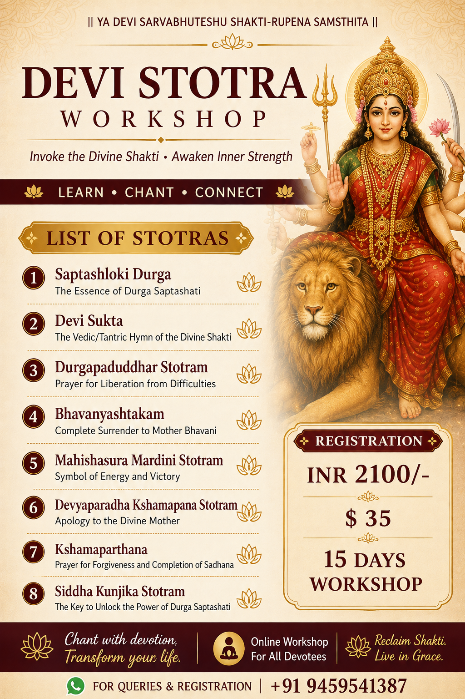

Dr. Kishor Kumar
Sanskrit Scholar & Educator
📧 Email: sharmakishor77@gmail.com
📞 WhatsApp: +91 9459541387
📿 Devi Stotra Workshop & Classes
Traditional chanting, phonetics, and philosophical commentary.
आगामी एवं वर्तमान सत्र (Current & Upcoming Sessions)

- सौन्दर्यलहरी (Saundarya-Lahari) : पारंपरिक पद्धति से स्तोत्र पाठ, शुद्ध उच्चारण अभ्यास और दार्शनिक रहस्यों का विवेचन।
- महिम्नस्तोत्र पाठ: व्याकरण सम्मत पदच्छेद और अर्थ विमर्श सहित विशेष कक्षाएं।
कक्षा की विशेषताएं (Key Features)
- शुद्ध संस्कृत उच्चारण एवं स्वर-प्रक्रिया का विशेष अभ्यास।
- स्तोत्रों के पीछे छिपे दार्शनिक और तांत्रिक अर्थों का सरल उद्घाटन।
📝 पंजीकरण एवं शुल्क विवरण / Registration & Fee
प्रवेश अथवा शुल्क संबंधित जानकारी के लिए संपर्क करें:
💬 WhatsApp पर संपर्क करें (Message Me)